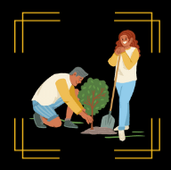

PLASTIC DETOX
The main objective of the drive was to raise awareness about the importance of segregating plastic waste and to encourage people to adopt this practice in their daily lives.
The drive was conducted in various parts of the city, including schools, parks, and residential areas. The volunteers distributed pamphlets and posters with detailed information on the proper ways to segregate plastic waste. They also conducted interactive sessions with the participants, educating them on the various types of plastic waste and how to segregate them effectively.

TREEVOLUTION
The drive was aimed at promoting the importance of trees in mitigating climate change, improving air quality, and creating a healthy environment for all.
The event brought together volunteers from various walks of life, including students, local residents, and environmental enthusiasts. Participants were given hands-on training on the best planting techniques, such as digging holes and planting saplings.
The drive was a huge success, with over 500 trees planted in various locations around the community.The drive also served as a reminder of the power of collective action in creating a sustainable future for all.